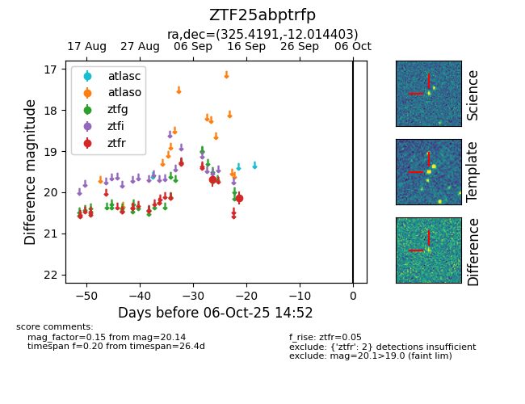

FINK: ZTF25abptrfp
Lasair: ZTF25abptrfp
ALeRCE: ZTF25abptrfp
ZTF25abptrfp (ztf,fink)
equatorial (ra, dec) = (325.4191,-12.01440)
galactic (l, b) = (42.1094,-43.13197)

last ztfr=20.14
2 ztfr detections